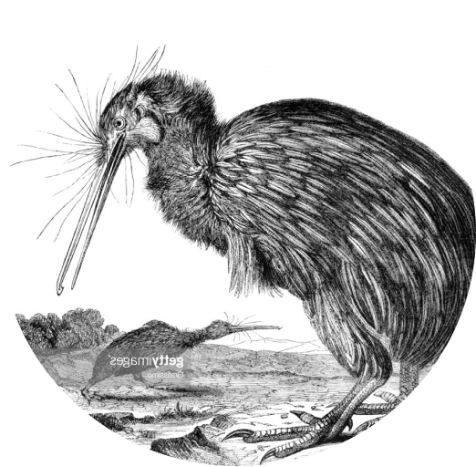

Hasta hace unos años se creía que el kiwi era un ave únicamente nocturna porque pocas veces se le había visto a la luz solar, pero los investigadores descubrieron que en realidad sí sale durante el día. Lo que sucede es que prefiere descansar en su madriguera y salir en la noche para buscar su alimento.
